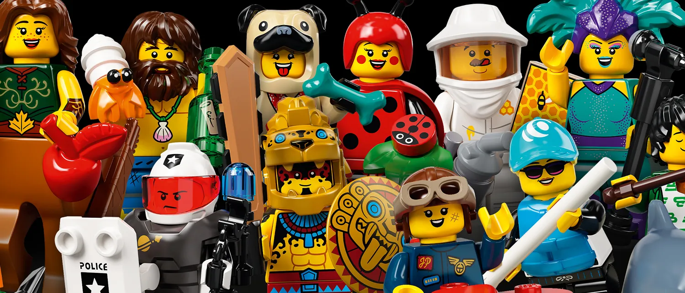

Welcome to the Lego Universe
Lego is more than just a toy—it’s a gateway to creativity, storytelling, and engineering for people of all ages. From simple brick structures to intricate, moving machines, Lego bricks have captured the imagination of builders worldwide. Founded in Denmark in 1932 by Ole Kirk Christiansen, Lego started as a small wooden toy company before transitioning into the interlocking plastic bricks we know today. Over the decades, Lego has expanded into films, video games, theme parks, and an ever-growing lineup of sets that bring beloved stories to life. Whether you're an architect designing miniature cities, a child stacking towers, or a fan collecting nostalgic sets, Lego provides endless opportunities for innovation and play.
This website is dedicated to exploring the vast world of Lego. Here, you can dive into the rich history of the brand, explore some of the most iconic and beloved Lego sets, get inspired by breathtaking custom builds, and engage with a passionate community of builders. Whether you're new to Lego or a lifelong enthusiast, this site is your resource for everything related to Lego. From classic themes like Lego City and Space to modern marvels like the Lego Ideas series, there’s always something new and exciting to build. Join us on this journey as we celebrate the magic of Lego—brick by brick.
